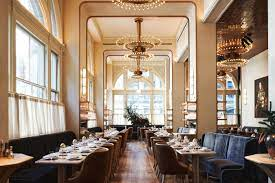
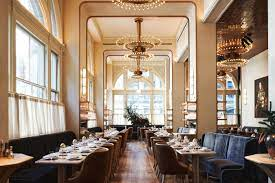

La Buena Tortilla
La Buena Tortilla es un restaurante fundado en 2002 en Aranjuez, Madrid. Empresa familiar dirigida por Miguel, segunda generación, en este espectacular restaurante. Cuenta con diferentes salones y terrazas en los que poder degustar su fantástica carta. Carnes y pescados cocinados a la brasa en su asombrosa parrilla. No menos espectacular son sus nuevos platos como el pulpo a la parrilla o el tartar de salmón con manzana. Todo ello regado con excelentes vinos. Si quieres vivir una inolvidable experiencia gastronómica llámanos al 999 999 999 y reserva tu mesa. ¡No te arrepentirás!
 
